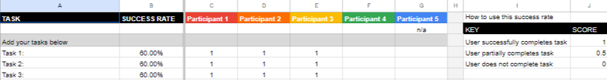
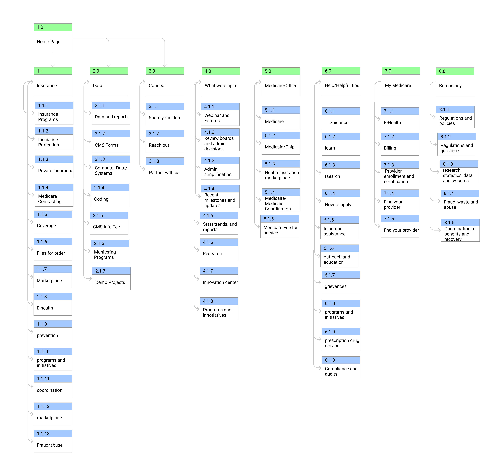
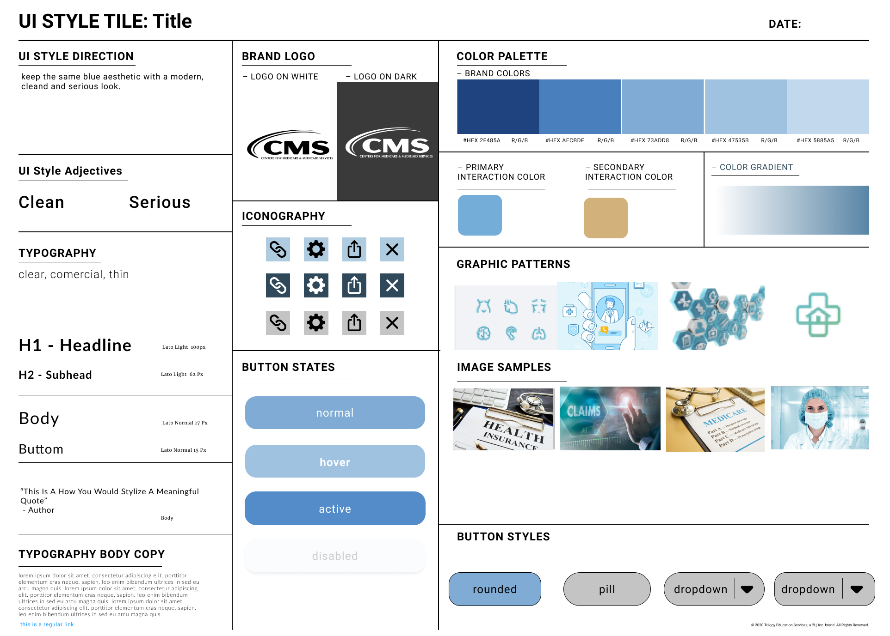
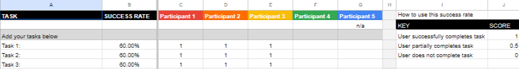
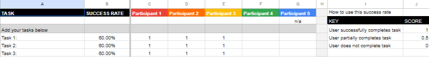

A redesign of the california medicaid/medicare website.
Case Study
California Medicare/Medicaid Information Website.
Activities
Usability Test/Research/User persona
Proto/Personas
User Path/Site Map
Style guide/Redlined and Annotated Agency Nav/Ideation/Heuristic Evaluation
Value Proposition/User Test/Card Sorting
sketches/Sitemap
Wireframes
Brief
U-Game-U-Play, a video game information website, is a hub for general video game information, game reviews, and scores. In addition, the website may offer a forum for users to discuss and share information about video games, allowing for a sense of community to be built around the website. Additionally, the website could have a news section that covers the latest industry developments and releases, thereby keeping the visitors up to date with the world of video games. Overall, a well-designed video game information website can offer visitors a one-stop destination for all things video games, making it a valuable resource for gamers and those interested in the gaming industry.
Project
Government Redesign
Role
User Research/WireFrame Designer
Time
5 Week Project
Tools Used:
Figma
Trello
Google Drive
Zoom
CMS
Persona
p> Melissa Serrano is our user persona to create an understanding and a link with the website's end-users and also to Gain a perspective similar to the users of the Medicaid and medicare websites.
User Path
Heuristic Evaluation
We used a heuristic Evaluation to scan and rate the problems or features of the original site.
User Test

Redlined And Annotated Agency Nav
As a team, we’ve concluded that although the site has a lot of functions, it also makes it difficult to navigate
through. We found it challenging to locate and complete specific tasks,
such as policies and applications.
Usability Test
Goals
1. Locate the Learn more tab to learn about Advance Equity
2. Find General Information about My Medicare
3. Learn How to Apply for Coverage on the Medicaid Page
Notes
“Easy to find the Medicare General Information.”
“I am unsure about the Medicare costs and where I can find it.”
“I am unsure if I can locate the Medicare application through the CMS website or if I have to go to the Medicare website.”
Card Sorting
Site Map
We plotted a site map of the website, the different links, sections from the redesign, and what to add or take away to make a cleaner, time-effective, seamless redesign.

Syle Guide

Lofi Sketches/Hi-Fi Invision/Wireframes
Lo-fi and Hi-Fi sketches which we made to plan out the design of our Wireframe
Desktop Wireframe
Destop version Of Our Redesign.
Mobile Wireframe
Mobile Version Of Our Redesign.
Final Thoughts/Conclusion
A website redesign with some color changes for a fresh look that is more accessible to the eyes and minor changes on links present on the design and pages our group added or deleted from the site.
.png)


 
